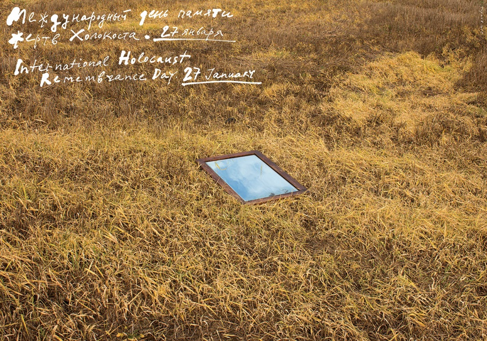
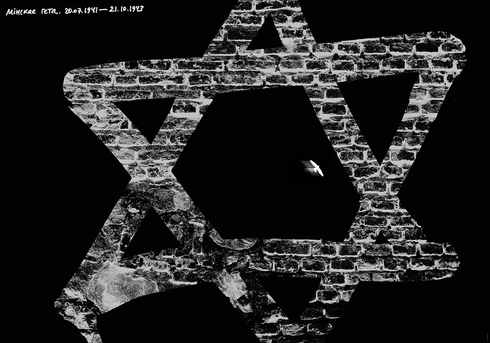
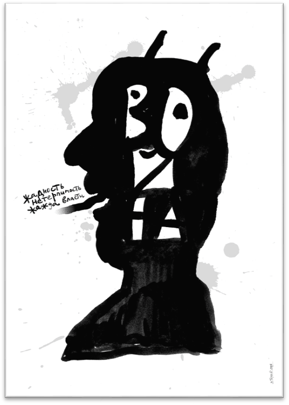
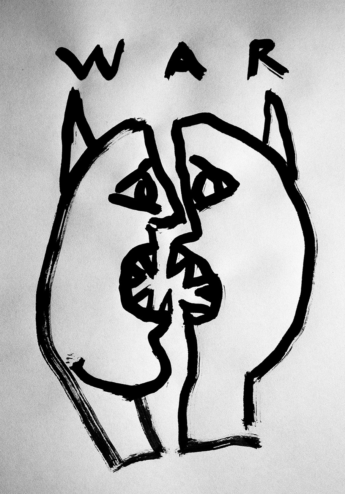

- «Как бы ни кончилась война, в Европе не останется
- живого еврея» (А.Гитлер)
Никогда не исчезнет из памяти человечества это страшное слово: холокост.
Вечным, несмываемым позором покрыли себя немецкие фашисты, уничтожившие шесть миллионов евреев – потомков народа, создавшего бессмертную Книгу Книг – Библию, открывших Новую эру в физике, социологии, психологии (Эйнштейн, Маркс, Фрейд). В Беларуси жертвами Холокоста были 810000 евреев – число, равное населению большого города.
Писать о Холокосте трудно – не хватает слов для выражения сердечной боли и возмущения зверством выродков человечества – фашистов. Плакат Юрия Тореева говорит нам: чем же теперь можем мы помочь этим людям, замученным в лагерях смерти, безвинно убитым кровавыми извергами? Мы можем только плакать, вспоминая страдания узников и их мученическую смерть, подобную колосу, растоптанному злодейским сапогом.
Вечная память жертвам Холокоста! Вечный позор убийцам!
Holocaust Day 2018
Международный день памяти жертв Холокоста 27января
- Многострадальная земля, поросшая густой травой,
- Заботливо хранит в своих недрах
- Останки невинно убиенных и замученных,
- Погибших от преступной руки извергов – фашистов-юдофобов.
- Тела жертв Холокоста покоятся в недрах земли,
- Но души их вкушают вечный мир на небесах,
- Одесную Престола Всевышнего.
Это показал нам Художник одним простым жестом:
Он положил на траву зеркало – и мы увидели новую светлую обитель безвинно погибших людей: чистое синее Небо.
Этот плакат растрогал меня до слёз. Он создан истинным гением (здесь иное определение невозможно). Выразить так много и таким простым жестом!
Пусть души невинных страдальцев обретут вечный мир на небесах! Аминь.
Минское гетто
Мы видим Звезду Давида, выложенную из тяжёлых грязных кирпичей.
Это стены гетто, лагеря смерти миллионов людей.
Здесь уже нет слёз – осталась только боль в сердце, которой не суждено утихнуть.
И гнев против убийц – выродков рода человеческого: Вечно гореть им в аду!
War 2014
На плакате – безобразный чёрный профиль мужской головы со змеиным языком и острыми рогами. Это – современный бог войны. В нём не осталось ничего от красавца-Марса или Ареса, от могучего Баала, или «всеотца» Вотана (бога викингов). В его приплюснутой голове нет возвышенных целей или благородных стремлений – кого-то защитить, освободить от гнёта врагов, вернуть утраченное… Желания и мотивы этого идола: жадность, нетерпимость, жажда власти.
Художник создал злую карикатуру на идола войны. И хотя о войне уже было сказано немало горьких слов – повторять их нужно постоянно. Повторение – мать учения.
War 2015
Второй плакат на антивоенную тему не нуждается в комментариях. Здесь так очевидны нелепость и безобразие всяческой вражды двух государств, или народов, или наций. Смысл плаката очень широк: он говорит о вражде людей в любом её проявлении: между соседями, сослуживцами, членами семьи… Увы, с такими явлениями трудно бороться. Дело Художника – изобразить этот порок общества во всём его безобразии.
Юрий Тореев справился с этой задачей. Он показал, что враждующие стороны виноваты одинаково; без осознания этого факта вражда может продолжаться вплоть до гибели одной или обеих сторон (что убедительно показано в мировой художественной литературе.
Л. Миронова,
25.03.2018